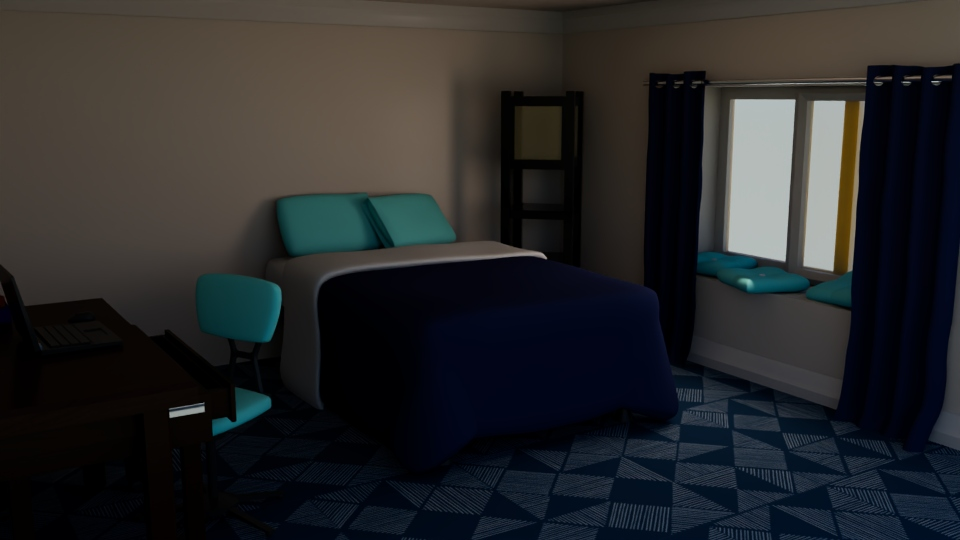
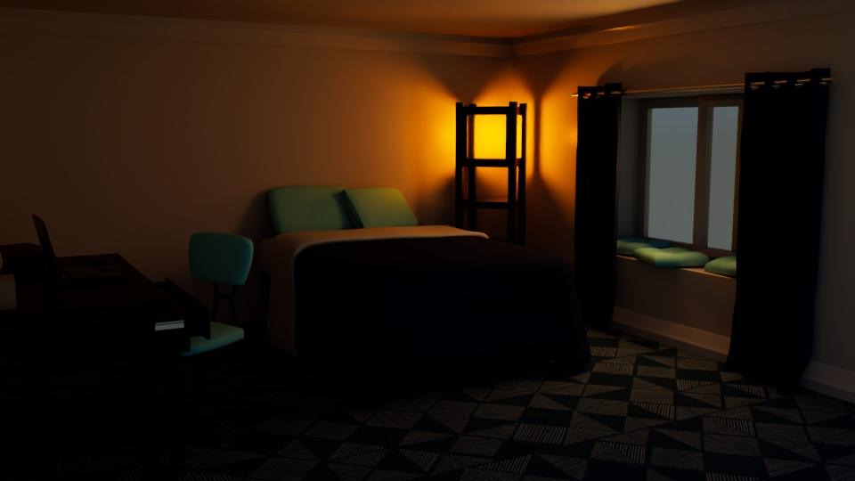
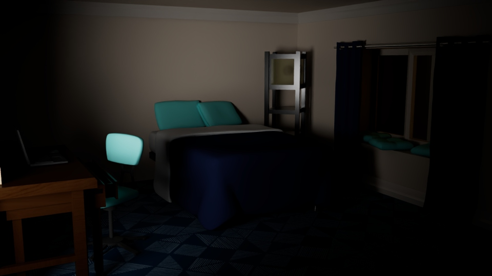
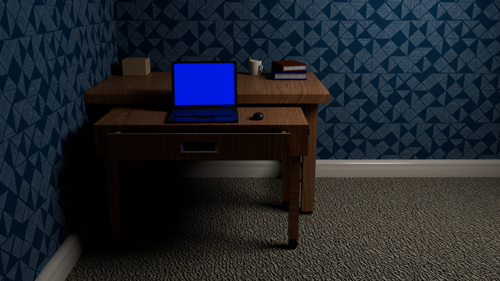

Autumn Ryan | 3D Art
Home ContactRenders
All objects modeled in Maya and rendered using Maya Arnold. Blue triangle texture sourced form architextures.org




All objects modeled in Maya and rendered using Maya Arnold. Blue triangle texture sourced form architextures.org



